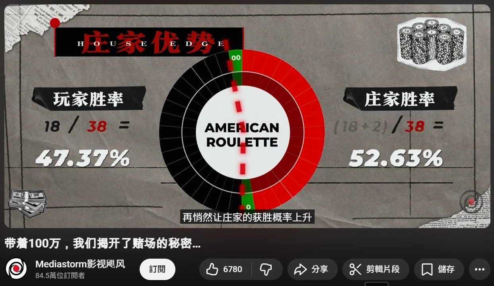
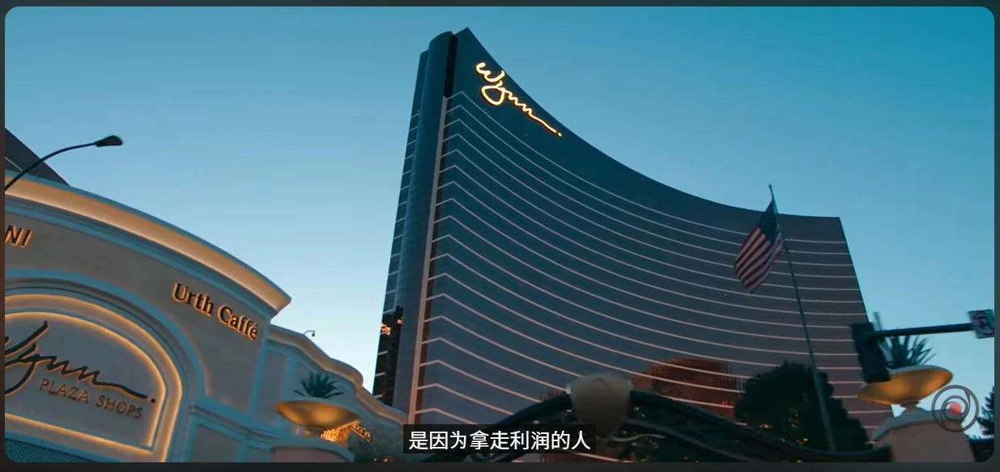
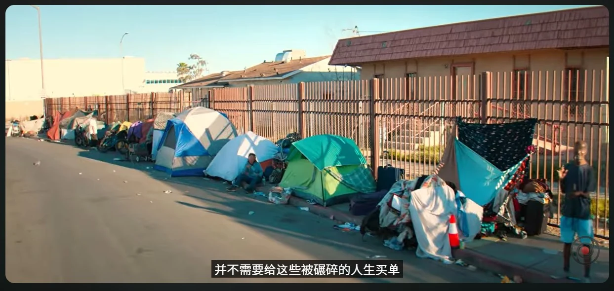

觀看影視颶風 〈帶著 100 萬，我們揭開了賭場的秘密〉 後的系統觀察紀錄。本篇聚焦一個結構性提問：當一個產業必須仰賴「大量玩家長期輸錢」才能穩定運作，這個系統是如何被設計出來的。
賭場是一個把數學、心理學、建築學、社會結構全部綁在一起的系統工程，而它最讓人忽略的，是那份安靜。
# 莊家不需要每一手都贏
影片提到，美國賭客每年在賭場輸掉的金額超過 1,200 億美元，約等於全球電影票房的三倍。支撐這個數字的，不是少數一擲千金的大賭客，而是無數每次只押幾十美元的普通人。
直覺上會認為賭場希望客人大輸、然後被掃地出門——這個畫面錯了。賭場的商業模式希望你常常贏：小贏、頻繁贏、贏到你相信今天手氣不錯。只有「偶爾贏」才能讓人留在桌邊；只要人還坐著，時間和數學都站在莊家這邊。
莊家追求的是長期的、統計上的、無聊到近乎機械的勝。單局結果只是噪音，唯一重要的變數是樣本數。
# 那兩個綠色格子，就是整個系統
美式輪盤上有 18 紅、18 黑，以及兩個綠色格子：0 和 00。

押單色勝率為 18/38 ≈ 47.37%，莊家勝率為 20/38 ≈ 52.63%。兩者之間 5.26% 的差距即為莊家優勢 (House Edge)。大數法則保證：下注次數越多，這個微小偏差越會被放大為不可逆的結果。
老虎機是同一套邏輯的另一種封裝。返獎率 (RTP) 通常設定在 85~95% 之間，即每投入 100 元，數學期望值為穩定損失 5~15 元。每次開獎由獨立的隨機亂數產生器決定，機器不存在「累積到快中大獎」的記憶機制。
# 連莊家坐上桌，勝率也不會比較高
荷官下班後的勝率與觀光客完全相同。實務上不少荷官會將當日工資重新投回賭桌，他們的數學知識並不構成保護。
莊家優勢來自「結構差距」——它寫在規則本身，與是否會算牌無關。了解系統與不被系統碾壓是兩件獨立的事：前者為認知層面，後者只取決於是否進場。荷官一旦進場，即退化為一個統計樣本。
# 「賭場的錢」——比數學更狠的設計
數學層本身相對樸素，真正的精密度在疊加於上方的心理設計層。行為經濟學將此現象定義為「House Money Effect」(Thaler & Johnson, 1990)：當玩家偶然贏得一筆資金，認知系統會自動將此利潤歸類為「賭場的錢」，跟「個人辛苦所得」那一格分開記帳。
此心理帳本一旦建立，風險偏好即刻上移——下注規模放大、決策頻率加快、損失敏感度下降。影片中，一位荷官學員 Badal 在老虎機上觸發雙倍獎勵後，立刻把贏得的獎金轉移到另一台機器並提高賭注：「這是賭場的錢，輸了不心疼。」他的單注從幾角錢直接跳到每次 $5 至 $10。那個轉換不需要任何人說服，念頭自然浮現。
這正是賭場的目標狀態。免費酒精、香氛、無時鐘無窗戶的空間、入口配置的低波動老虎機，全部都在將玩家往這個狀態推進。
這種設計模式廣泛存在於多個產業。表面上使用者在做選擇，實際上環境早已將選項壓縮到一個極窄的區間。
-
第一層：數學
莊家優勢寫在規則裡，保證長期收割，不靠運氣。 -
第二層：心理
House Money Effect、沉沒成本、時間感剝奪，讓人主動把籌碼推向桌面。 -
第三層：建築與感官
沒有窗戶、沒有時鐘、恆溫恆亮、香氛覆蓋，抹除所有離開的訊號。
# 利潤私有化，代價社會化


賭場本身不借錢給即將破產的客戶，但賭場外圍的街道布滿年化利率 300% 以上的高利貸。分工極為乾淨：賭場收走現金流，高利貸收走房屋與車輛抵押。
整個產業是一個生態系——賭場、高利貸、老人巴士團、典當鋪、免費餐券，每一環對應系統的一個階段，每一環只負責自己那一小塊。這是一個責任被切片的系統，沒有任何單一節點需要為最終結果負責。
更大尺度上，賭場與政府分走了千億規模的利潤與稅收；成癮、憂鬱、家破人亡、犯罪率上升等代價則全數外部化至社會。這是經濟學的「外部性」：當一個行為的效益私有、成本社會化，它必然被過度生產。賭場產業即為此公式的標準教材。
# 沒人會為被輾碎的人生買單
拉斯維加斯地底，有一個原為防洪而建的數百英里地下隧道系統。那裡住著系統的殘留樣本：破產賭客、以及負擔不起地面房租的基層服務員。其中一部分人，白天在燈光下替賭場工作，下班後回到場館正下方的隧道睡覺——影片稱之為「垂直通勤」。他們不會出現在賭場年報、城市宣傳片，或任何一份「產業貢獻 GDP」的統計裡。
這是結構設計的結果：沒有任何節點需要為他們負責。系統的核心特徵在於它的贏錢方式：讓上游每一個獲利節點都能乾淨地把帳單轉嫁出去。
利潤集中、風險擴散、代價轉化為「不幸個案」——類似模式在許多領域都能觀察到。賭場只是將這套邏輯執行得最透明、最不加掩飾。
# 唯一必勝策略
面對一個經過數學與心理學雙重武裝的系統，唯一能保證獲勝的策略是永遠不坐上那張賭桌。
當系統結構本身即對玩家不利，所有「在系統內打贏它」的策略，算牌、控注、止損紀律、所謂的必勝法，都只是在降低輸的速度；輸的方向，始終不變。
真正有效的動作是拒絕進入。在一個規則不利的賽局裡，「不玩」本身就是最強的一步棋。
當你看懂一個系統對你不利，最有效的行動是清楚地選擇不進去——進場之後再怎麼努力，也只是輸得慢一點。
Source
本文觀後感來自 Mediastorm 影視颶風：
《帶著 100 萬，我們揭開了賭場的秘密⋯》
參考
- Thaler, R. H., & Johnson, E. J. (1990). Gambling with the House Money and Trying to Break Even. Management Science, 36(6), 643–660.
- Grinols, E. L. (2004). Gambling in America: Costs and Benefits. Cambridge University Press. — 系統性估算賭博的社會成本，其郡級研究指出賭場與犯罪率上升的統計關聯。